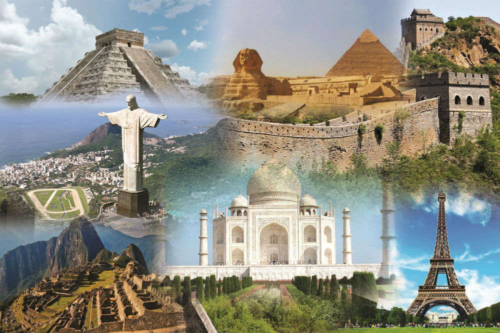
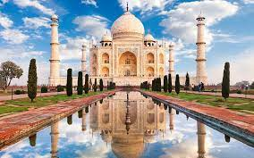
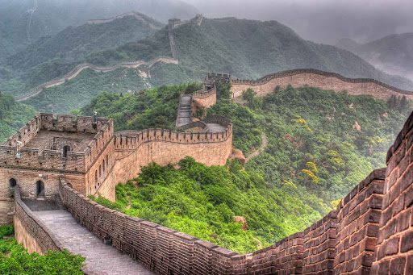
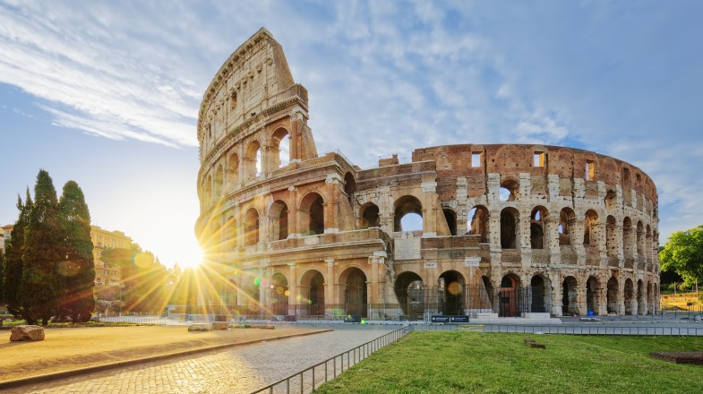

SOME WONDERS OF THE WORLD
The project named as ‘New 7 Wonders of the World’ was launched, as a private initiative, by Bernard Weber of Swiss-origin, in 1999.
The New Open World Corporation and relevant website were established in 2001.
The objective of the New 7 Wonders Foundation was to revive the ‘seven wonders of the ancient world’ concept,
and prepare a list of modern ‘new 7 wonders of the world’ through a popular vote.
Herodotus (484 BC-425 BC) and Callimachus (305 BC-240 BC) had listed the ‘ancient’ 7 wonders of the world as: Great Pyramid of Giza,
Hanging Gardens of Babylon, Statue of Zeus at Olympia, Temple of Artemis at Ephesus, Mausoleum of Maussollos at Halicarnassus, Colossus of Rhodes, and Lighthouse of Alexandria. Of these, only the Great Pyramid of Giza is still standing; other six were destroyed in earthquake, fire, or due to other reasons.
For inclusion in the list of ‘new 7 wonders’ , the site had to be man-made, completed before the year 2000, and be in an acceptable state of preservation. People were invited to cast their votes through the internet or telephone. Over 100 million votes were cast to select `new 7 wonders’ from among the sites in 200 countries of the world. There was no check on multiple voting. By November 2005, 177 monuments were up for consideration. On 1 January 2006, the list was narrowed down to 21 sites. Later, following complaints from Egypt over the inclusion of their ancient Great Pyramid in the list of ‘new 7 wonders’, it was reduced to 20. A midpoint tally had a top 10 list which included all 7 winners, plus Acropolis (Greece), Easter Island Moais (Chile) and the Eiffel Tower (France). With immense public participation, the ‘new 7 wonders of the world’ have been chosen, and India’s Taj Mahal is one of them for people across the world to admire and enjoy.
.




FOR MORE INFORMATION, KINDLY CLICK HERE